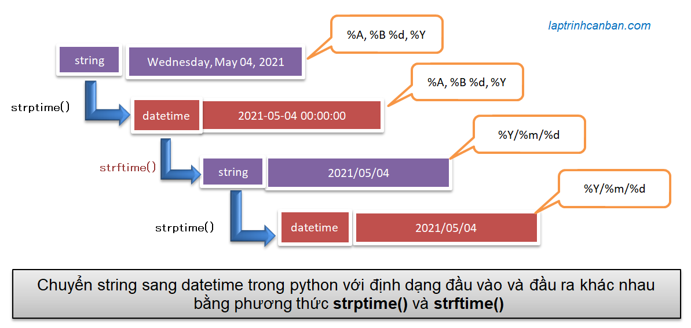

Hướng dẫn cách chuyển string sang datetime trong python. Bạn sẽ học được cách chuyển string sang datetime bằng phương thức strptime() trong python cũng như cách định dạng thời gian của kết quả đầu ra với bảng định dạng ngày tháng năm trong python sau bài học này.
Chúng ta có thể chuyển string sang datetime trong python bằng cách sử dụng sử dụng phương thức strptime() trong python. Tùy vào trường hợp mà chúng ta có thể định dạng đầu ra datetime giống với định dạng đầu vào của chuỗi hoặc là với một định dạng hoàn toàn khác. Sau khi chuyển string sang datetime trong python, chúng ta có thể tính toán thời gian được ghi ở chuỗi ban đầu, ví dụ như là cộng trừ ngày tháng trong Python hoặc là lấy ngày tháng năm và giờ từ datetime chẳng hạn.
Lại nữa, nếu bạn muốn làm ngược lại, hãy xem bài viết: Chuyển datetime sang string trong python.
Chuyển string sang datetime trong python
Cú pháp chuyển string sang datetime trong python
Bạn có thể sử dụng phương thức strptime() trong python của module datetime để phân tích một chuỗi string chứa giá trị ngày giờ, sau đó chuyển chuỗi đó sang dạng datime trong python, với cú pháp sau đây:
datetime.strptime(date_string, format)
Trong đó:
- datetime.strptime dùng để chỉ định tên phương thức
- date_string là chuỗi string chứa giá trị ngày giờ được viết theo định dạng chỉ định tại format.
- format là định dạng ngày tháng năm của chuỗi date_string, cũng như là của kết quả đầu ra.
Lưu ý là định dạng format phải đúng với định dạng thời gian được sử dụng trong chuỗi, ví dụ với chuỗi 2020/07/22 10:4:38" chúng ta cần chỉ định format là "%Y/%m/%d %H:%M:%S". Nếu không, lỗi sẽ xảy ra khi chạy chương trình.
Bảng định dạng ngày tháng năm trong chuỗi python
Định dạng ngày tháng năm trong python được chỉ định bằng bảng định dạng ngày tháng năm trong chuỗi python dưới đây:
| Format | Ý nghĩa |
|---|---|
| %y | Năm có hai chữ số 00, 01, …, 99 |
| %Y | Tháng có 4 chữ số 0001, 0002, …, 9999 |
| %b | Viết tắt tên tháng Jan, Feb, …, Dec ※1 |
| %B | Tên tháng January, February, …, December ※1 |
| %m | Tháng 01, 02, …, 12 |
| %d | Ngày 01, 02, …, 31 |
| %H | Giờ(24 giờ) 00, 01, …, 23 |
| %I | Giờ(12 giờ) 00, 01, …, 11 |
| %p | AM or PM ※1 |
| %M | Phút 00, 01, …, 59 |
| %S | Giây 00, 01, …, 59 |
| %f | Micro giây 000000, 000001, …, 999999 |
| %z | Time zone, +0000, -0400 etc |
| %Z | Time zone UTC, EST |
※1: Giá trị sẽ thay đổi thích hợp tùy theo local đã đặt. Về cách chỉ định locale hãy xem chi tiết ở bài Chỉ định locale trong datetime python
Sau đây chúng ta hãy cùng xem các ví dụ cụ thể về cách chuyển string sang datetime trong python như sau:
Chuyển string sang datetime trong python với định dạng đầu vào và đầu ra giống nhau
Giả sử chúng ta có một chuỗi string chứa thông tin thời gian, và một format tương ứng với cách viết thời gian trong chuỗi string đó, thông qua bảng định dạng ngày tháng năm trong chuỗi python. Chúng ta sẽ chuyển chuỗi string này sâng định dạng format thời gian tương ứng với nó như sau:
import datetime |
Một số ví dụ khác:
import datetime |
Lưu ý là chúng ta cần chỉ định định dạng format của chuỗi string phải phù hợp với chuỗi string đó. Trong trường hợp chuỗi string có định dạng khác với format, lỗi ValueError sẽ xảy ra:
import datetime |
Lỗi trả về:
ValueError: time data '2020/15/22 10:4:38' does not match format '%Y/%m/%d %H:%M:%S' |
Chuyển string sang datetime trong python với định dạng đầu vào và đầu ra khác nhau
Ở phần trên chúng ta đã biết cần chỉ định định dạng format của chuỗi phải đúng với định dạng thời gian được sử dụng trong chuỗi string ban đầu.
Điều này sẽ gây khó khăn cho chúng ta khi muốn tạo ra một datetime với định dạng format hoàn toàn khác với định dạng trong chuỗi. Ví dụ như chuỗi ban đầu có định dạng "Wednesday, May 04, 2021" nhưng chúng ta muốn datetime có định dạng là 2020/15/22 10:4:38 chẳng hạn.
Trong trường hợp này, sau khi đã chuyển chuỗi string ban đầu sang datetime rồi, chúng ta cần phải thêm xử lý chuyển datetime thu được sang string với định dạng format khác, sau đó mới chuyển lại string có kiểu format khác đó sang datetime và thu về kết quả cuối cùng.

Chúng ta sẽ sử dụng kết hợp phương thức strftime() với các bước sau đây:
Bước 1: Chuyển string sang datetime trong python
import datetime |
Bước 2:Chuyển datetime kết quả sang string với định dạng format khác
#Thay đổi định dạng datetime trong python |
Bước 3:Chuyển lại string với định dạng format khác sang dạng datetime và thu về kết quả cuối cùng
date_dt_result = datetime.datetime.strptime(date_dt_str, result_format) |
Tổng hợp lại, chúng ta viết mã lệnh như sau:
import datetime |
Tính toán thời gian sau khi chuyển string sang datetime trong python
Sau khi đã chuyển string sang datetime trong python, thông tin thời gian ở chuỗi string ban đầu đã được chuyển sang dạng datetime, do đó chúng ta có thể tiến hành các xử lý tính toán với datetime này.
Ví dụ, chúng ta có thể lấy ngày tháng năm và giờ từ datetime như sau:
import datetime |
Chúng ta cũng có thể cộng trừ ngày tháng với datetime thu được như sau:
import datetime |
- Xem thêm: Lấy ngày tháng năm và giờ trong python
- Xem thêm: Cộng trừ ngày tháng và so sánh thời gian trong pytho
Tổng kết và thực hành
Trên đây Kiyoshi đã hướng dẫn bạn về cách chuyển string sang datetime trong python rồi. Để nắm rõ nội dung bài học hơn, bạn hãy thực hành viết lại các ví dụ của ngày hôm nay nhé.
Trong trường hợp bạn muốn chuyển ngược lại giữa string và dattime, hãy tham khảo bài viết chuyển datetime sang string trong python nhé.
URL Link
HOME › python cơ bản - lập trình python cho người mới bắt đầu>>15. datetime trong python